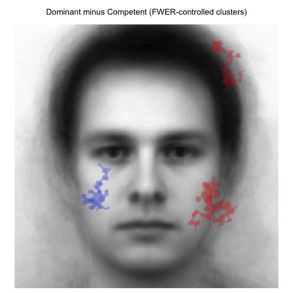

A consolidated toolkit for quality assessment of reverse correlation (RC) experiments end-to-end. Catches silent data-processing errors before classification image (CI) computation, then quantifies CI quality after: magnitude, stability, and discriminability.
Note: package is not on CRAN, distribution is GitHub-only.
Why this package?
You ran a reverse correlation study, generated classification images, and now have to defend the result. Three questions deserve an honest answer before reporting:
-
Is the data clean? Did response coding, stimulus alignment, trial counts, and reaction times match what the analysis pipeline assumes? A
{0, 1}response column where the analysis expects{-1, +1}produces a near-blank CI that looks plausible. - Is the signal real? If you split the sample in half, do the two halves produce similar CIs, or did you average a pile of noise?
- Is one condition really different from another? Could the apparent difference between, say, “trustworthy” and “untrustworthy” be mere chance?
rcisignal answers all three by working directly on the pixel-level signal produced by your participants. No second-phase study where independent raters subjectively rate CIs on Likert scales, and no inheriting the Type I error inflation of that two-phase design (Cone, Brown-Iannuzzi, Lei, & Dotsch, 2021).
It works whether you ran a standard 2IFC task (the classic reverse-correlation paradigm) or a Brief-RC 12 task (Schmitz, Rougier & Yzerbyt, 2024 — 12 noisy faces per trial instead of 2).
What it does
The exported functions group into two families, both oriented around signal quality:
-
Pipeline diagnostics (
check_*,run_diagnostics) — catch silent data-processing errors before CI computation: response coding, response time, response bias, trial counts, duplicate trials, stimulus-pool alignment,rcicrversion compatibility. -
Reliability and signal analyses (
rel_*,run_reliability,run_discriminability,infoval,diagnose_infoval,face_mask) — quantify CI quality after computation. Within-condition stability via permuted split-half with Spearman-Brown correction and ICC(3,k). Between-condition discriminability via Welch pixel-wise t-tests, cluster-based permutation with FWER control (Maris & Oostenveld, 2007) and threshold-free cluster enhancement (Smith & Nichols, 2009). Per-producer informational value (infoval) with a trial-count-matched reference distribution that closes a calibration gap in the originalrcicrimplementation;diagnose_infoval()walks through common pitfalls (mask mismatch, insufficient trials, scaling assumptions) and points at the cause when the headline number looks wrong.
Both families address the same underlying concern. As reverse correlation has been deployed more widely in the past few years, a recurring pattern of subtle data-processing and inferential issues has become more visible. rcisignal is one place to diagnose and resolve them.
Installation
From GitHub:
# install.packages("remotes")
remotes::install_github("olivethree/rcisignal")If you ran a 2IFC study, you’ll also need rcicr (used to compute the individual CIs):
remotes::install_github("rdotsch/rcicr")If you only run Brief-RC, you can skip rcicr — the Brief-RC code is fully native to rcisignal.
User’s guide
The full user guide walks through every exported function with worked examples, including a real-data example from a published 2IFC reverse- correlation study (Oliveira et al., 2019).
Quick start
1. Diagnose the raw data first
Before computing CIs, run the input-side diagnostics on your trial-level response data.
library(rcisignal)
# 2IFC pipeline
responses <- read.csv("path/to/responses.csv")
report <- run_diagnostics(
responses,
method = "2ifc",
rdata = "path/to/rcicr_stimuli.RData",
col_rt = "rt"
)
print(report)
# Brief-RC 12 pipeline (same shape, different aux file)
report <- run_diagnostics(
responses,
method = "briefrc",
noise_matrix = "path/to/noise_matrix.txt",
col_rt = "rt"
)
print(report)A green report means the mechanics are in order. A [FAIL] means fix that issue before proceeding.
2. Within-condition reliability
Once the data is clean and you have per-participant CIs, ask whether participants in each condition agreed with each other.
# Starting from raw trial-level data, build per-participant CIs:
trustworthy <- ci_from_responses_2ifc(
responses = trust_responses,
rdata_path = "data/rcicr_stimuli.RData",
baseimage = "base"
)
untrustworthy <- ci_from_responses_2ifc(
responses = untrust_responses,
rdata_path = "data/rcicr_stimuli.RData",
baseimage = "base"
)
# Did participants agree within each condition?
print(run_within(trustworthy$signal_matrix, seed = 1))
print(run_within(untrustworthy$signal_matrix, seed = 1))Starting from CI images already saved as PNG/JPEG
If you have your CIs as image files on disk:
trustworthy <- load_signal_matrix("data/cis_trustworthy/", "data/base.jpg")
untrustworthy <- load_signal_matrix("data/cis_untrustworthy/", "data/base.jpg")
print(run_within(trustworthy, seed = 1))
print(run_within(untrustworthy, seed = 1))
print(run_between(trustworthy, untrustworthy, seed = 1))Heads-up. Results from PNG/JPEG inputs may differ slightly from raw-response inputs because PNGs encode the display-scaled CI, not the raw signal. The package warns you once per session when this matters; see the user guide for the full story. When possible, work from raw responses rather than rendered images.
For a function-by-function walkthrough — including how to interpret cluster maps, sample-size warnings, when to use ICC(3,1) vs ICC(3,k), and Brief-RC end-to-end — see the full user guide.
Worked example: Oliveira et al. (2019)
To make the output concrete, here are two contrasts from the open data of Oliveira, Garcia-Marques, Dotsch & Garcia-Marques (2019). In Study 1, 200 participants completed a 2IFC reverse-correlation task on a 256 x 256 grayscale male base face across 10 trait conditions (20 producers per trait, 300 trials each). The four traits highlighted here are Trustworthy, Friendly, Competent, and Dominant.
The motivating prediction was that the Dominant vs Competent contrast would yield broader pixel-level differences than the Trustworthy vs Friendly contrast. Trustworthy and friendly both load on the warmth dimension and share much of their facial encoding; dominant and competent are usually thought of as agency- related but have been argued to dissociate, with dominance reading off coarser whole-face features and competence reading off subtler ability cues.
Descriptive cluster-agreement maps
Difference of the two group-mean CIs across all face-oval pixels; no inferential filter applied. Red = first condition stronger; blue = second condition stronger.
| Trustworthy − Friendly | Dominant − Competent |

|

|
FWER-controlled cluster-agreement maps
Same difference signals, but pixels outside any cluster significant at p < .05 are transparent (cluster threshold |t| > 2.0; 2000 stratified label permutations; max-mass null).
| Trustworthy − Friendly | Dominant − Competent |

|
 |
The two contrasts pick out qualitatively different spatial signatures, broadly consistent with the prediction. Trustworthy versus Friendly localises around the eyes and mid-face — exactly the kind of socially-relevant feature region the warmth dimension is read off. Dominant versus Competent spreads more widely across the face, consistent with a contrast that draws on both whole-face agency cues and finer ability cues. Among the pixels that survive the FWER filter, the Dominant vs Competent map retains noticeably more spatial extent than the Trustworthy vs Friendly map.
Per-region informational value (preview)
Magnitude per producer also varies by face region. The grid below runs infoval() separately on each (trait, region) cell using the Schmitz et al. (2024) face masks and the trial-count-matched reference distribution. Cells report median producer z-score and (in parentheses) how many of 20 producers cleared the conventional z >= 1.96 threshold.
| Trait | Full face | Upper face | Eyes | Mouth |
|---|---|---|---|---|
| Trustworthy | +0.50 (3/20) | +0.30 (2/20) | +0.62 (0/20) | +0.53 (3/20) |
| Friendly | +0.97 (5/20) | +0.23 (2/20) | +0.09 (2/20) | +0.75 (4/20) |
| Competent | +0.70 (3/20) | +0.21 (3/20) | +0.24 (2/20) | +0.25 (5/20) |
| Dominant | +0.89 (6/20) | +0.37 (5/20) | +0.76 (3/20) | +0.38 (2/20) |
The per-region picture is more granular than the headline full-face number suggests. Dominance carries comparatively strong signal in the eyes and upper face but only modest signal around the mouth; friendliness flips the pattern, with the mouth carrying its strongest regional signal and the eyes the weakest. Trustworthy localises broadly across the eyes and mouth without a clear regional peak. The full per-region grid, the bootstrap dissimilarity intervals that accompany it, and the methods-section reporting templates are in vignette §12.
Behind the scenes
If you want the technical details:
-
Input-side diagnostics: response coding (catches the
{0, 1}→ near-blank-CI failure mode), trial counts, duplicates, response bias, RT distributions, stimulus-pool alignment,rcicrversion compatibility. - Within-condition reliability: permuted split-half with Spearman-Brown correction, leave-one-out influence diagnostic, ICC(3,1) and ICC(3,k) computed via direct mean-squares (two-way mixed; pixels fixed, participants random).
- Between-condition discriminability: vectorised Welch pixel t, cluster-based permutation with max-statistic FWER control (or threshold-free cluster enhancement), bootstrap representational dissimilarity (Euclidean distance with percentile CIs).
-
Per-producer informational value (
infoval()): Frobenius-norm z-score with a reference distribution matched to each producer’s trial count — for both 2IFC and Brief-RC.
Citation
If rcisignal helps your research, please cite it:
Oliveira, M. (2026). rcisignal: Quality checks for reverse-correlation
data and classification images. R package v0.1.0.A version DOI will be minted on Zenodo at the first tagged release. Run citation("rcisignal") in R for a BibTeX entry.
Please also cite the methodological sources appropriate to your pipeline:
-
2IFC: Dotsch (2016, 2023) for the
rcicrpackage; Brinkman et al. (2019) for infoVal. - Brief-RC: Schmitz, Rougier, and Yzerbyt (2024).
License
Released under the MIT License.
Credits
Designed by Manuel Oliveira  . Code and documentation were co-built with Claude (Opus 4.6, Anthropic; April-May 2026).
. Code and documentation were co-built with Claude (Opus 4.6, Anthropic; April-May 2026).
Acknowledgements
This package builds on the foundational work of Ron Dotsch, Loek Brinkman, Alex Todorov, Mathias Schmitz, Marine Rougiuer, Vincent Yzerbyt, and their many collaborators across the years. Reverse correlation is no longer a central part of my research, but I still find a lot of enjoyment in working with these tools, and the inspiration to keep building them comes mostly from occasional collaborations with the people who supervised me during my PhD and with whom I still enjoy working on these topics from time to time. Hopefully this helps and inspires the small RC research community out there :)